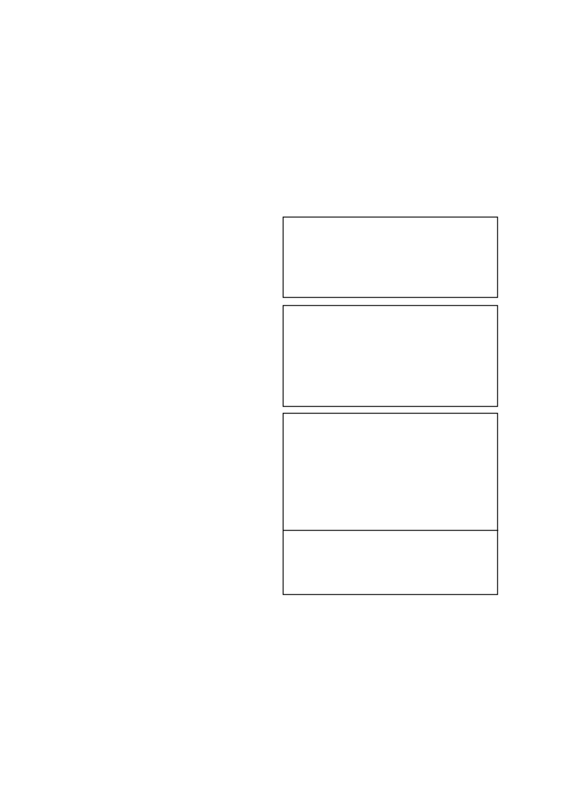

SERVIAN
/ 2
Warning:
Possible damage to triazine sensitive crops
•
Where soils have been treated with lime to correct the soil pH,
the possibility of crop damage increases dramatically in fields
where triazines were previously applied. This is due to the
triazine molecules being replaced on the clay complex with
calcium cations and the triazine thus becoming more available
in the soil-water complex.
•
No triazine sensitive crops should be planted in the season
after the soil pH adjustment has been done with lime. This
applies even if triazines were used at crop rotation rates in
previous years.
•
Triazine sensitive crops include all broadleaf crops e.g. diffe-
rent bean crops, sunflowers and all cereals e.g. wheat.
•
These warnings however do not guarantee that no damage
would be experienced to even the following maize crop as
large volumes of previously applied triazines might now be
available depending on the volume of lime applied and the
rainfall experienced.
Warning: Possible increased efficacy, phytotoxicity and
residual action
•
Increasing the soil pH levels above 7 could produce conditions
for increased efficacy and reduced selectivity. This increased
pH may also result in increased soil residual action by certain
herbicides influencing the choice of following crops especially
under irrigation.
•
In situations where pH adjustments has been done, take care
when sulphonyl urea herbicides, triazolopyrimidine sulfonani-
lide herbicides and imidazolinone herbicides, which are all
sensitive to soil pH fluctuations, have been used or are about
to be used.
Contact your local SYNGENTA representative to discuss
crop rotation and crop protection programmes to follow
before embarking on any pH adjustment programme
.
MINIMUM
RECROPPING
INTERVALS
AND
CROP
ROTATION GUIDELINES
Other crops may be very sensitive to low concentrations of
SERVIAN
in the soil. Therefore, careful consideration should be
given to crop rotation plans prior to using
SERVIAN
.
The minimum-recropping interval is the time between the last
application of
SERVIAN
and the anticipated date of planting a
subsequent crop.
To avoid injury to subsequent crops, the following recropping
intervals should be observed:
•
Avocado, citrus, mangoes, maize, sorghum and wheat - 1
month.
•
Dry beans - 3 months.
•
Potatoes
- 6 months.
•
Sunflower - 13 months.
•
For all other crops a replanting interval of at least 24 months
must be observed preceded by a test planting.
The recropping interval where additional SORGOMIL GOLD 600
SC (L6221) or GESAPRIM SUPER (L3914) or GARDOMIL GOLD
(L6246) is added to
SERVIAN
is as follows:
•
Maize - 1 month
•
Grain sorghum, wheat, dry beans and potatoes - 9 months
•
Sunflower – 13 months.
•
For all other crops a replanting interval of at least 24 months
must be observed preceded by a test planting.
On soils with 0 - 10% clay in the North West Province and North
Western Free State as well as soils with a high lime content,
the recommended GARDOMIL GOLD, GESAPRIM SUPER and
SORGOMIL GOLD 600 SC rates could have the potential to dam-
age follow-up crops.
Important
The above mentioned waiting periods are valid only if the correct
dosage rate of
SERVIAN
was applied on soil with a pH (H
2
O) of
less than 7 and normal or above average rainfall fell during and fol-
lowing the season in which the application was made.
5. WEEDS CONTROLLED
SERVIAN
normally controls the following weed species
at the
dosage rates recommended below:
SERVIAN (50 g):
Bidens pilosa
black jack
Cleome monophylla
spindlepod
Cyperus esculentus
yellow nutsedge
Cyperus rotundus
purple nutsedge
Galinsoga parviflora
gallant soldier
Tagetes minuta
khaki weed
SERVIAN (50 g)
+ GESAPRIM SUPER (1
l
/ha)
or
SERVIAN (50 g)
+ GARDOMIL GOLD (1,5 - 2,9
l
/ha)
control the above mentioned weeds as well as:
* Amaranthus hybridus
common pigweed
* Datura ferox
large thorn apple
* Tribulus terrestris
dubbeltjie
* Xanthium strumarium
cocklebur
SERVIAN
+ GESAPRIM SUPER (1
l
/ha) +
SORGOMIL GOLD 600 SC (1
l
/ha)
or
SERVIAN
+ GESAPRIM SUPER (1
l
/ha) +
GARDOMIL GOLD (1
l
/ha)
or
SERVIAN
+ GARDOMIL GOLD (2,9
l
/ha)
control the above mentioned weeds as well as:
Crotolaria sphaerocarpa
mealie crotolaria
Ipomoea purpurea
common morning glory
* Factors such as high rainfall after application, cultiva-
tion, heavy soils and high weed pressure may detrimen-
tally effect the residual control of dicot weeds with
SERVIAN
.
Under these conditions it may be necessary to add 1
l
/ha
SORGOMIL GOLD 600 SC
or
1
l
/ha GESAPRIM SUPER
or
1
l
/ha GARDOMIL GOLD additionally.
SERVIAN
does not control
Cyperus spp.
pre-emergence and
poor control of late germinating weeds can therefore be expected.
Under these conditions a second application may be necessary
before the crop canopies.
SERVIAN
has only a limited dicot activity and must, for this
reason, be tankmixed with other dicot herbicides for a complete
dicot spectrum.
SERVIAN
has no activity on grasses.
Grasses must therefore be
controlled pre-emergence with DUAL GOLD (L5749), METAGAN
GOLD (L5748), or FALCON GOLD (L5750).
Consult the appli-
cable labels for details.
6. DIRECTIONS FOR USE
Use only as directed
General information
